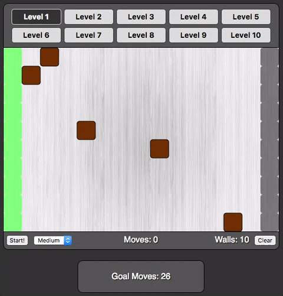

-
The goal of Mazer is to create the longest possible path
from start to finish.
-
The path starts from any of the light green cells on the
left and ends on any of the gray cells on the right.
-
Brown cells are Rocks (▧),
they block the path and cannot be moved. You can alter
the path by placing Walls (▧) to
block the path.
-
You can place Walls by clicking any open cell. You have a
limited number of walls indicated by the counter under the
board.
-
Click the Start! button to animate the path and calculate
the number of moves you achieved.
-
Walls can be removed to be placed elsewhere by clicking on
them.
Level complete!
Congratulations! You Win!
Path is blocked!